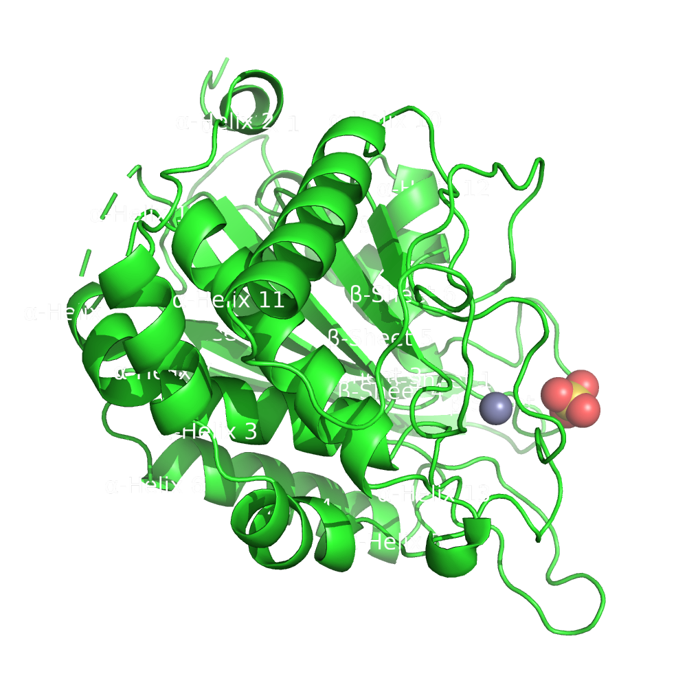
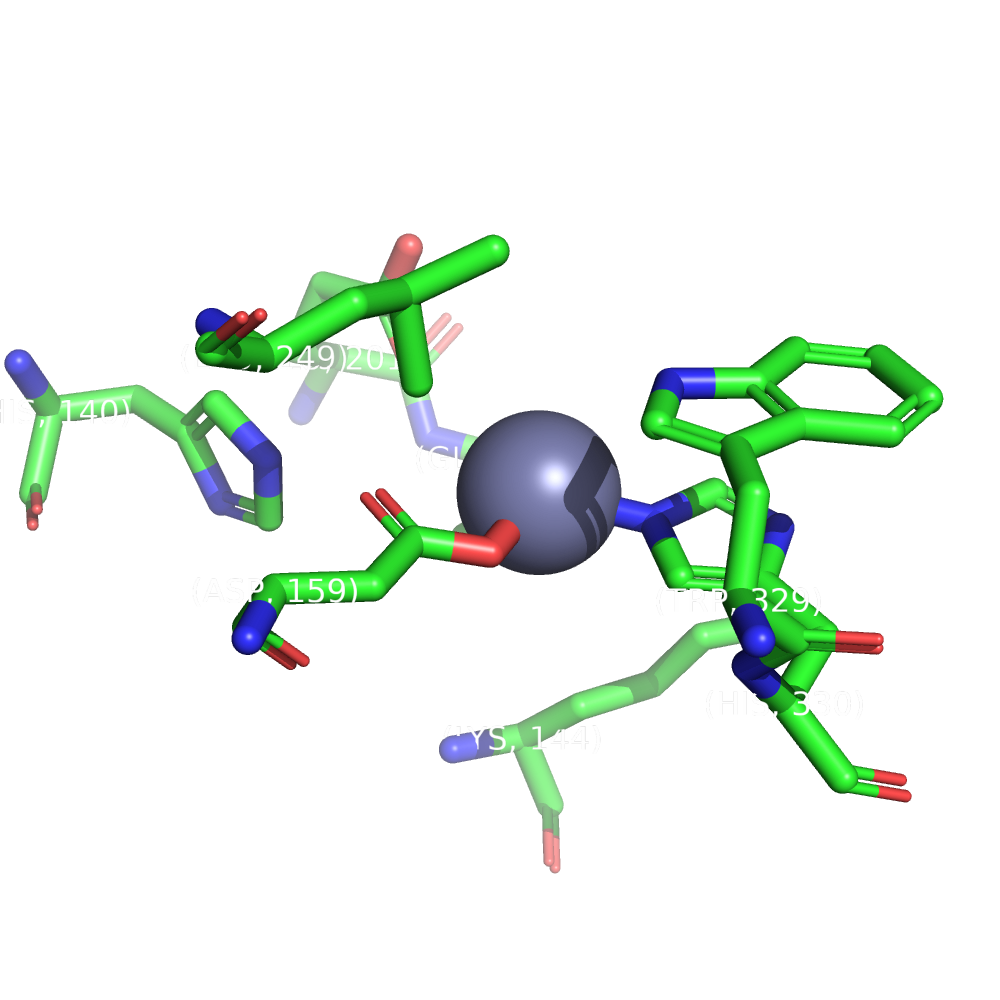

Revisión bibliográfica¶
A continuación, desarrollamos una breve revisión bibliográfica sobre la proteína hQC, haciendo especial énfasis en los aspectos estructurales y funcionales de la misma. Este apartado se corresponde a la 1ª actividad de la relación de ejercicios.
Metodología¶
En la realización de esta revisión bibliográfica se hizo uso de la base de datos Scopus para la selección de un grupo reducido de revisiones y artículos de interés que trataran sobre esta proteína. También se recurrió la base de datos RCSB PDB para la búsqueda de estructuras experimentales disponibles para esta proteínas, cuyas características principales se encuentran resumidas más adelante.
Introducción¶
La enzima hQC (Human glutaminyl cyclase), es una aminoaciltransferasa, EC 2.3.2, que se encuentra en plantas y animales. Esta enzima es objeto de numerosos estudios por su implicación en patologías como el Alzheimer, en cuya relación nos centraremos en esta revisión (Gunn et al., 2021) 2.
Interés clínico¶
El Alzheimer es una enfermedad neurodegenerativa crónica y que afecta a población envejecida causando demencia. Se estima que un 13% de la población mayor a 65 años desarrolla Alzheimer y un 45% por enzima de los 85 años. Sin embargo, la tasa de fracaso de fármacos candidatos en ensayos clínicos es una de las mayores en cualquier área de enfermedades, siendo superior al 99%. El Alzheimer es una enfermedad multifactorial sobre la cual se han propuesto diversas hipótesis que explican los mecanismos por los que se origina (Vijayan & Zhang, 2019) 4.
Una de las hipótesis con más aceptación en la comunidad científica es la hipótesis de la cascada amiloide. Según esta hipótesis, es la deposición de la proteína β amiloide, AβP, el agente causal de la enfermedad. Las placas que forman estos péptidos al depositarse están formadas por distintas especies de AβP. Una de ellas es el pGlu-Aβ y su formación está catalizada por la enzima QC, sobre la cual trata este trabajo y que está up-regulada durante el desarrollo de la enfermedad (Vijayan & Zhang, 2019) 4.
La enzima QC es capaz de catalizar la ciclación del glutamato N-terminal a partir de su precursor glutaminilo. Esta reacción es una modificación postraduccional de importancia en la maduración de numerosos neuropéptidos bioactivos, hormonas y citoquinas, durante su maduración en la vía secretora (Gunn et al., 2021) 2.
Más concretamente, en el caso del Alzheimer, la enzima QC cataliza la ciclación del glutamano N-terminal en la posición 3 o 11 del AβP truncado. Esta modificación, respecto al AβP sin modificar, aumenta la hidrofobicidad, la estabilidad, la propensión a agregarse y la neurotoxicidad. Actualmente, existen numerosos estudios que exploran posibilidad de utilizar inhibidores de de QC para reducir la producción de pGlu-Aβ (Vijayan & Zhang, 2019) 4.
Además del Alzheimer, se conoce la implicación de esta enzima en las siguientes patologías. La información mostrada a continuación ha sido obtenida del trabajo de Coimbra & Salvador, 2021 1.
- En procesos inflamatorios, debido a su intervención en la maduración de la citoquina CCL2.
- En cáncer, debido a la modificación del inmuno checkpoint CD47 y que es necesaria para una interacción efectiva de esta molécula con sus dianas.
- En periodontitis, enfermedad de las encías, debido a que las principales bacterias causantes de esta enfermedad necesitan de la actividad de una QC bacteriana para el crecimiento y viabilidad celular. Además, se ha relacionado una de estas bacterias, P. gingivalis el desarrollo de artritis reumatoide en pacientes. En este sentido, se conoce que la enzima QC se encuentra up-regulada en pacientes con esta patología.
Inhibidores de hQC¶
Los inhibidores de sQC basan su acción principalmente en la coordinación entre un grupo de unión a metal con el ión \(Zn^{2+}\) del sitio activo. Se distinguen los siguientes tipos de fármacos principalmente. La información mostrada a continuación ha sido obtenida del trabajo de Vijayan & Zhang, 2019 4.
- Inhibidores basados en imidazol.
- Inhibidores basados en benzimidazol.
- Inhibidores basados en metil triazol.
- Inhibidores basados en sulfolípidos extraídos de microalgas y y obtenidos mediante metabolómica reversa.
Aspectos estructurales de importancia¶
Se conocen dos isoformas de la enzima QC en Homo sapiens, la llamada QC secretora, sQC, codificada por el gen QPCT localizado en el cromosoma 2p22.2, y la llamada QC golgi residente, gQC, codificada por el gen QPCTL, en el cromosoma 19q13.32 (Huang et al., 2005) 3.
La isoforma gQC se diferencia de la sQC en que tiene una secuencia N-terminal responsable de su anclaje en el aparato de Golgi (Vijayan & Zhang, 2019) 4. Por lo demás, ambas isoformas son muy similares (\(C\alpha RMSD < 1 Å\)), por lo que podremos realizar consideraciones generales sobre las dos simultáneamente (Vijayan & Zhang, 2019) 4. Poseen una estructura globular con un pliegue mixto α/β. La actividad glutaminil y glutamil ciclasa reside en el dominio maduro (residuos 33-361) de la proteína (Gunn et al., 2021) 2
|  |
|---|
| Figura 1. Dominio maduro anotado con las estructuras secundarias de 2AFM. Elaboración propia usando PyMOL. En el apartado de visualización se aborda en detalle la realización de estas imágenes. |
La estructura posee una topología de sándwich abierto con una lámina β central de seis hebras rodeada por α-hélices a ambos lados. En un lado tenemos 2 α-hélices, α7 y α9, y en el otro 6 que son α2, α3, α4, α5, α6, y α10. Esta lámina β central esta formada por dos hebras antiparalelas (β1 y β2) y 4 paralelas (β3, β4, β5 y β6) y constituye el corazón hidrofóbico de la molécula (Huang et al., 2005) 3.
Estructura del sitio activo¶
El sitio activo está formado por 6 bucles entre α3 y α4, β3 y α5, β4 y α7, β5 y α8, α8 y α9, y β6 y α10. Consta de un ión de Zinc situado en el bolsillo del sitio activo y que está coordinado tetraédricamente con D159 Oδ2, E202 Oε1, H330 Nε2 y una molécula de agua. También resultan de interés una serie de residuos altamente conservados en el entorno del zinc a los que se les atribuye en literatura cierto papel en la catálisis. Estos residuos son E201, W207, D248, D305, F325 y W329 y se ha comprobado que mutaciones en estos aminoácidos reducen significativamente la actividad enzimática (Gunn et al., 2021) 2.
Ambas isoformas se diferencian en el tamaño del sitio activo debido a variaciones conformacionales en los lazos que forman parte del mismo. La isoforma gQC, Golgi residente, es ligeramente más ancha y más abierta que la sQC, secretora. (Vijayan & Zhang, 2019) 4
Estructuras experimentales disponibles¶
En el momento en que se realiza esta revisión hay un total de 31 estructuras experimentales depositadas en el RCSB PDB. Muchas de ellas corresponden a proteínas mutantes o cristalizadas en presencia de su inhibidor, debido al interés clínico de esta molécula. Para realizar este trabajo hemos escogido la proteína 2AFM, la cual posee una buena resolución y corresponde a la proteína wild type. No obstante, en algunas actividades se ha decidido otras estructuras de esta proteína con el objetivo de realizar una comparación o de comprobar si los programas utilizados funcionaban con otras estructuras de la misma proteína.
Tabla 1. Resultados búsqueda en RCSB PDB. Elaboración propia.
| PDB ID | Resolution (Å) | R Free | R Work | Space Group | Length a (Å) | Length b (Å) | Length c (Å) | Structure Title |
|---|---|---|---|---|---|---|---|---|
| 2AFW | 1.56 | 0.213 | 0.189 | H 3 2 | 119.132 | 119.132 | 332.826 | Crystal structure of human glutaminyl cyclase in complex with N-acetylhistamine |
| 2AFX | 1.64 | 0.205 | 0.177 | H 3 2 | 119.013 | 119.013 | 332.821 | Crystal structure of human glutaminyl cyclase in complex with 1-benzylimidazole |
| 2AFM | 1.66 | 0.204 | 0.182 | H 3 2 | 119.029 | 19.029 | 332.938 | Crystal structure of human glutaminyl cyclase at pH 6.5 |
| 2ZEO | 1.66 | 0.194 | 0.175 | H 3 2 | 119.226 | 119.226 | 332.457 | Crystal structure of the human glutaminyl cyclase mutant D305E at 1.66 angstrom resolution |
| 6YJY | 1.67 | 0.1884 | 0.1694 | H 3 2 | 119.274 | 119.274 | 334.459 | Crystal structure of human glutaminyl cyclase in complex with neurotensin 1-5 |
| 2ZEF | 1.67 | 0.208 | 0.185 | H 3 2 | 119.161 | 119.161 | 333.064 | Crystal structure of the human glutaminyl cyclase mutant E201D at 1.67 angstrom resolution |
| 2AFZ | 1.68 | 0.212 | 0.186 | H 3 2 | 118.953 | 118.953 | 332.997 | Crystal structure of human glutaminyl cyclase in complex with 1-vinylimidazole |
| 7CP0 | 1.7 | 0.2228 | 0.2054 | C 1 2 1 | 86.277 | 149.383 | 96.032 | Crystal Structure of double mutant Y115E Y117E human Secretory Glutaminyl Cyclase |
| 2ZED | 1.7 | 0.213 | 0.18 | H 3 2 | 118.926 | 118.926 | 332.499 | Crystal structure of the human glutaminyl cyclase mutant S160A at 1.7 angstrom resolution |
| 6GBX | 1.72 | 0.18307 | 0.15819 | C 1 2 1 | 86.14 | 149.81 | 95.98 | Crystal structure of human glutaminyl cyclase variant Y115E-Y117E in complex with SEN177 |
| 2ZEN | 1.78 | 0.205 | 0.178 | H 3 2 | 119.237 | 119.237 | 332.405 | Crystal structure of the human glutaminyl cyclase mutant D305A at 1.78 angstrom resolution |
| 3SI2 | 1.8 | 0.2597 | 0.1844 | P 21 21 21 | 41.76 | 83.06 | 95.71 | Structure of glycosylated murine glutaminyl cyclase in presence of the inhibitor PQ50 (PDBD150) |
| 2ZEH | 1.8 | 0.207 | 0.181 | H 3 2 | 119.051 | 119.051 | 332.652 | Crystal structure of the human glutaminyl cyclase mutant E201Q at 1.8 angstrom resolution |
| 7COZ | 1.85 | 0.2362 | 0.1955 | C 1 2 1 | 86.229 | 149.366 | 95.377 | Crystal Structure of double mutant Y115E Y117E human Secretory Glutaminyl Cyclase in complex with LSB-41 |
| 6YI1 | 1.92 | 0.1862 | 0.1593 | H 3 2 | 120.38 | 120.38 | 331.91 | Crystal structure of human glutaminyl cyclase in complex with Glu(gamma-hydrazide)-Phe-Ala |
| 3PBB | 1.95 | 0.23892 | 0.18107 | H 3 | 155.753 | 155.753 | 80.516 | Crystal structure of human secretory glutaminyl cyclase in complex with PBD150 |
| 4YWY | 1.95 | 0.21101 | 0.16408 | C 1 2 1 | 86.429 | 149.54 | 96.21 | Crystal Structure of double mutant Y115E Y117E human Glutaminyl Cyclase in complex with inhibitor PBD-150 |
| 3PBE | 1.95 | 0.1904 | 0.14264 | H 3 2 | 118.754 | 118.754 | 332.093 | Crystal structure of the mutant W207F of human secretory glutaminyl cyclase |
| 2ZEL | 1.97 | 0.218 | 0.176 | H 3 2 | 119.11 | 119.11 | 332.35 | Crystal structure of the human glutaminyl cyclase mutant D248A at 1.97 angstrom resolution |
| 2ZEE | 1.99 | 0.219 | 0.176 | H 3 2 | 119.12 | 119.12 | 332.006 | Crystal structure of the human glutaminyl cyclase mutant S160G at 1.99 angstrom resolution |
| 2ZEG | 2.08 | 0.209 | 0.177 | H 3 2 | 119.392 | 119.392 | 333.193 | Crystal structure of the human glutaminyl cyclase mutant E201L at 2.08 angstrom resolution |
| 4YU9 | 2.1 | 0.2542 | 0.21079 | C 1 2 1 | 86.38 | 149.63 | 96.3 | Crystal Structure of double mutant Y115E Y117E human Glutaminyl Cyclase |
| 2ZEP | 2.1 | 0.219 | 0.179 | H 3 2 | 119.543 | 119.543 | 334.021 | Crystal structure of the human glutaminyl cyclase mutant H319L at 2.1 angstrom resolution |
| 3SI0 | 2.1 | 0.26358 | 0.20382 | C 1 2 1 | 82.408 | 63.688 | 77.159 | Structure of glycosylated human glutaminyl cyclase |
| 2ZEM | 2.18 | 0.223 | 0.179 | H 3 2 | 118.778 | 118.778 | 332.5 | Crystal structure of the human glutaminyl cyclase mutant D248Q at 2.18 angstrom resolution |
| 2AFU | 2.22 | 0.226 | 0.188 | H 3 2 | 119.137 | 119.137 | 332.612 | Crystal structure of human glutaminyl cyclase in complex with glutamine t-butyl ester |
| 2AFS | 2.22 | 0.222 | 0.189 | H 3 2 | 119.447 | 119.447 | 333.848 | Crystal structure of the genetic mutant R54W of human glutaminyl cyclase |
| 2AFO | 2.35 | 0.216 | 0.185 | H 3 2 | 118.988 | 118.988 | 332.258 | Crystal structure of human glutaminyl cyclase at pH 8.0 |
| 3SI1 | 2.9 | 0.3006 | 0.2451 | P 21 21 21 | 43.24 | 86.87 | 97.16 | Structure of glycosylated murine glutaminyl cyclase |
Mecanismo de acción de hQC¶
Las QCs median la ciclación de la glutamina o glutamato expuestos en el N-terminal con liberación de agua o amoniaco. Para iniciar dicha ciclación, el ion \(Zn^{2+}\) localizado en el sitio activo polariza el grupo γ-amino del residuo y estabiliza el anión resultante del ataque nucleofílico sobre el carbono γ-carbonílico. En este mecanismo intervienen también E201 y D248 apoyando la transferencia de protones y aportando estabilidad (Gunn et al., 2021) 2.
 |
|---|
| Figura 2. Mecanismo de acción de la enzima hQC. Obtenido de Huang et al., 2005 3. |
A continuación, se muestra un detalle del sitio de unión de la proteína. Se pueden observar los residuos que se destacan anteriormente. Para realizar esta imagen se han seleccionado los átomos de hasta una distancia de 5 A del cofactor del sitio catalítico y se han realizado anotaciones sobre los carbonos alfa.
|  |
|---|
| Figura 3. Detalle del sitio de unión de la estructura 2AFM. Elaboración propia. |
El código en Python empleado para realizar la Figura 3 es el siguiente:
set ray_opaque_background, off
load data/processed/2AFM.pdb
remove solvent
select sitio_union, byres res 392 expand 5
remove (not sitio_union)
hide cartoon
show sticks
zoom sitio_union
label n. CA and sitio_union, "(%s, %s)" % (resn, resi)
python
import imageio
cmd.ray(500, 500)
filename = "sitio_union"+".png"
cmd.png(filename)
python end
Referencias¶
-
Coimbra, J. R. M., & Salvador, J. A. R. (2021). A patent review of glutaminyl cyclase inhibitors (2004–present). Expert Opinion on Therapeutic Patents, 31(9), 809-836. https://doi.org/10.1080/13543776.2021.1917549 ↩
-
Gunn, A. P., Wong, B. X., McLean, C., Fowler, C., Barnard, P. J., Duce, J. A., Roberts, B. R., & The AIBL Research Group. (2021). Increased glutaminyl cyclase activity in brains of Alzheimer’s disease individuals. Journal of Neurochemistry, 156(6), 979-987. https://doi.org/10.1111/jnc.15114 ↩↩↩↩↩
-
Huang, K.-F., Liu, Y.-L., Cheng, W.-J., Ko, T.-P., & Wang, A. H.-J. (2005). Crystal structures of human glutaminyl cyclase, an enzyme responsible for protein N-terminal pyroglutamate formation. Proceedings of the National Academy of Sciences, 102(37), 13117-13122. https://doi.org/10.1073/pnas.0504184102 ↩↩↩
-
Vijayan, D. K., & Zhang, K. Y. J. (2019). Human glutaminyl cyclase: Structure, function, inhibitors and involvement in Alzheimer’s disease. Pharmacological Research, 147, 104342. https://doi.org/10.1016/j.phrs.2019.104342 ↩↩↩↩↩↩↩